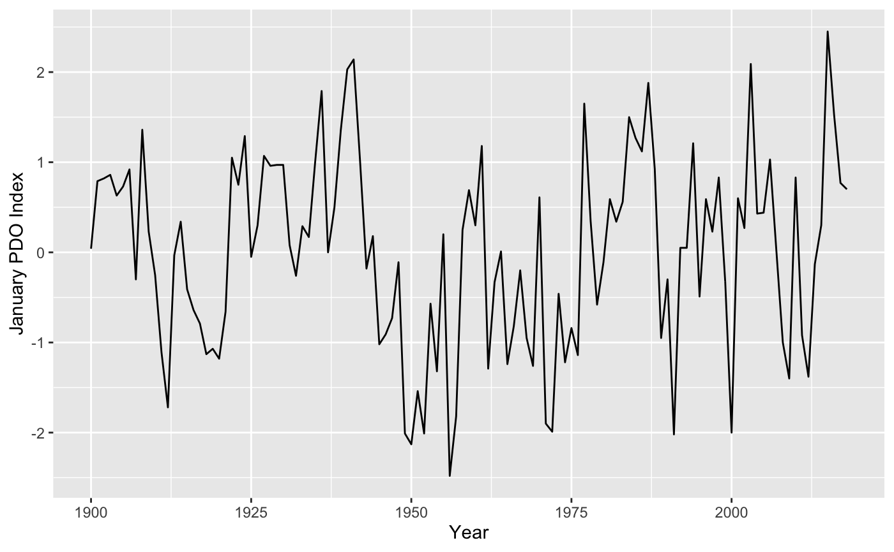

Monthly Pacific Decadal Oscillation (PDO) index values.
pdo
A tbl data frame:
The year as an integer.
The month as an integer.
The Pacific Decadal Oscillation index as a numeric.
For more information see https://github.com/poissonconsulting/rpdo.
library(rpdo) library(ggplot2) data(pdo) ggplot(data = subset(pdo, pdo$Month == 1), aes(x = Year, y = PDO)) + geom_line() + ylab("January PDO Index")